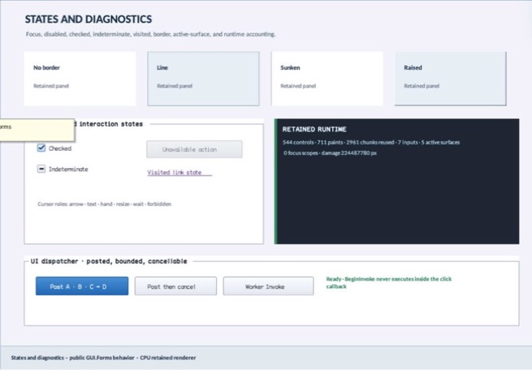

class · visual
MetricsView
MetricsView is an input-transparent diagnostic control over Window's structured metrics snapshot. It formats bounded live counters into a retained card with caller-owned title/style/accent width and group semantics; it does not replace the snapshot as instrumentation authority.
Visual evidence

Ownership and hierarchy
- Hierarchy
- Control → MetricsView
- Declaration
- include/gui_forms/controls/metrics_view/metrics_view.hpp:10
- Definition
- src/controls/metrics_view/metrics_view.cpp
Declared methods
MetricsView public
explicit MetricsView(StableId stable_id, std::string title = "Runtime metrics")Constructs a titled noninteractive diagnostic projection.
title public
[[nodiscard]] const std::string& title() const noexceptReturns the retained diagnostic heading.
set_title public
void set_title(std::string title)Commits title, synchronizes accessible name, and invalidates paint and semantics.
style public
[[nodiscard]] const BasicControlStyle& style() const noexceptReturns the compatibility color/style palette used by the card.
set_style public
void set_style(BasicControlStyle style)Commits palette and invalidates paint.
accent_width public
[[nodiscard]] double accent_width() const noexceptReturns the logical width of the leading diagnostic rail.
set_accent_width public
void set_accent_width(double width)Validates a width within [1, 32] and refreshes paint.
on_paint public
void on_paint(Painter& painter, Rect local_damage) overrideRecords backplane, accent rail, title, and a bounded two-line Window metrics readout.
hit_test_local public
[[nodiscard]] bool hit_test_local(Point local_point) const overrideAlways rejects input because metrics are observational.
semantic_descriptor public
[[nodiscard]] SemanticDescriptor semantic_descriptor() const overrideProjects group role, title, and the current structured metrics readout.
metrics_text private
[[nodiscard]] std::string metrics_text() constReports the current metrics text value without mutation.